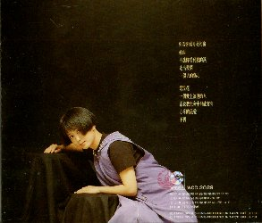

| 前のＣＤ | タイトル一覧 | 次のＣＤ |
| １９９１年９月５日 | （イ尓）看（イ尓）看月亮的（月僉） | ＷＣＤ－２０２９ |
|---|---|---|
| 華星唱片（WHA SHING RECORD & TAPE CO., LTD.） | ||
| ||
|  |
このアルバムからは、歌手名のところは、亞亞がなくなって
「孟庭葦」だけになりましたし、髪の毛もおかっぱになって、
耳たぶが出るくらい短くしています。 このアルバムの中の「紫浣花」については、歌詞カードの中で 「紫浣花的故事」として、説明されていますが、残念ながら 未だ読めません。 歌詞カードの裏には、ちょっとしたインタビュー（？）が、 載っています。 （これも読めていないので、内容は分かりません。） | |